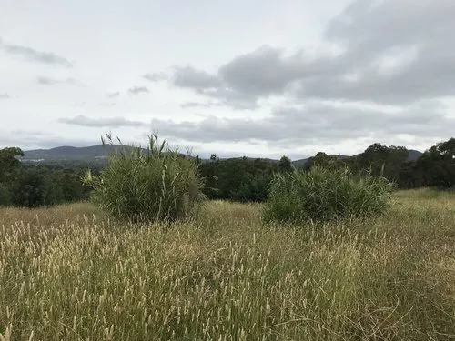

水生植物 · 植物界
芦竹 Arundo donax

禾本科芦竹属多年生挺水草本，茎秆高大、中空，可作编织和造纸原料，原产地中海，是常见的湿地能源植物。
- 分类
- 门被子植物门纲单子叶植物纲目禾本目科禾本科属芦竹属
- 栖息环境
- 河岸、池塘、沼泽的浅水区与湿泥地
- 地理分布
- 原产地中海地区，中国南北各地引种栽培
- 保护级别
- 暂无评估；部分地区逸生为入侵植物
物种志
芦竹为禾本科芦竹属的多年生挺水草本，株高 3–6 米，具粗壮根状茎，茎秆直立、中空，直径 1–3 厘米。叶片互生，披针形，长 30–60 厘米，宽 3–6 厘米，表面绿色。花序为圆锥花序，顶生，长 30–60 厘米，花小、淡褐色，花期秋季；果实为颖果。
芦竹原产地中海地区，中国南北各地有引种栽培，喜阳光充足、温暖湿润和浅水环境，耐寒、耐湿、耐瘠薄。它茎秆高大、生长迅速，可作编织、造纸和生物质能源原料，也可用于固土护岸和水体净化。栽培以根状茎分株繁殖为主，春季将根状茎切段栽种；生长期间保持浅水或湿润土壤。芦竹繁殖力强，在温暖地区逸生后可能成为入侵植物，需注意控制。
形态与习性
- 株高3–6 米，茎秆中空
- 叶片披针形，长 30–60 厘米
- 花期秋季，圆锥花序淡褐色
- 水深浅水至湿泥地
- 光照喜充足阳光
- 繁殖根状茎分株
- 主要用途编织、造纸、生物质能源
- 注意逸生后可能成为入侵植物
趣味知识
- 芦竹的茎秆高大中空，可作编织、造纸和生物质能源原料。
- 它生长迅速，在温暖地区逸生后可能成为入侵植物。
- 芦竹的根状茎发达，能固土护岸、净化水质。